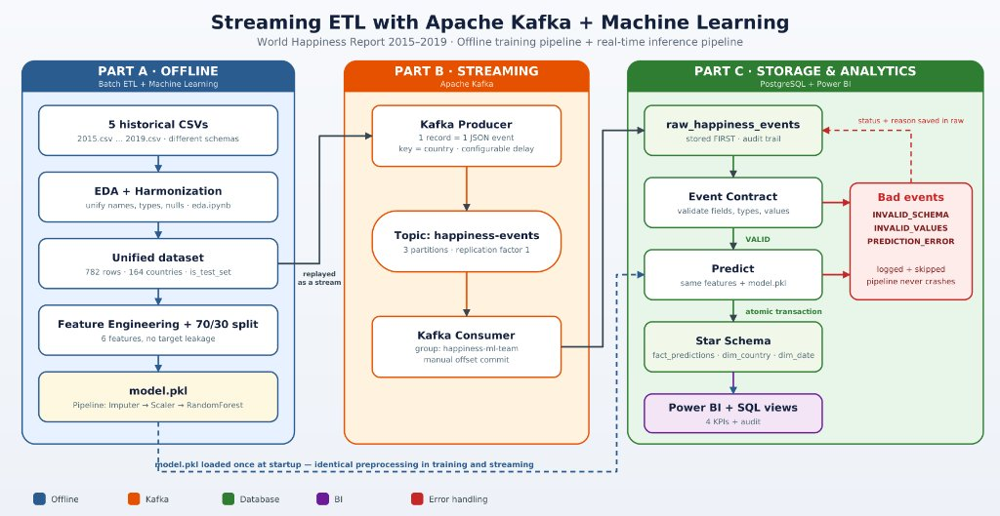
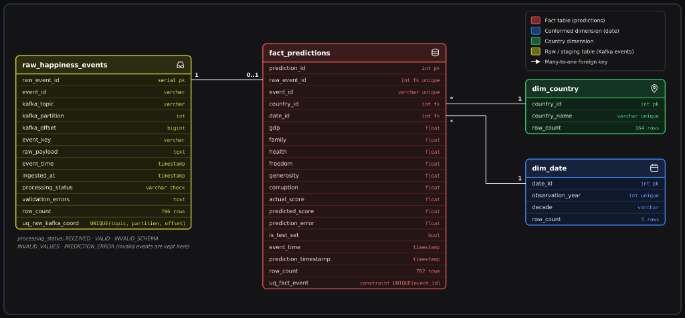
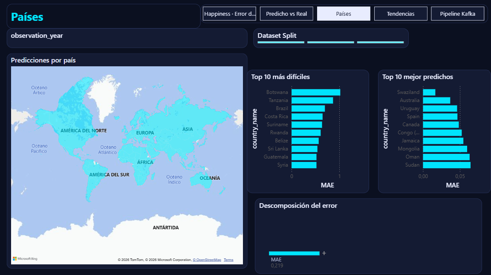
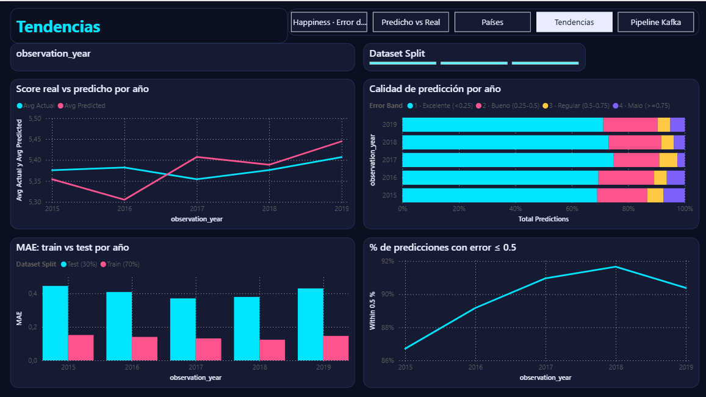

Transición de un pipeline tradicional por lotes (Batch) hacia una arquitectura orientada a eventos en tiempo real usando los datos históricos del World Happiness Report (2015–2019).
1. Parte A · Offline (Batch & ML)
Exploración, limpieza y unificación de 5 archivos CSV con esquemas distintos para entrenar y serializar un modelo de regresión (model.pkl).
2. Parte B · Streaming (Kafka)
Simulación de eventos en tiempo real con un Producer y un Consumer en Python que valida un contrato de eventos antes de predecir.
3. Parte C · Analítica (Postgres + BI)
Almacenamiento crudo para auditoría, modelo dimensional en estrella para predicciones y dashboard conectado directo a PostgreSQL.
Arquitectura End-to-End
Flujo General del Proyecto
El mismo preprocesamiento aprendido en el entrenamiento offline se reutiliza intacto dentro del consumidor de Kafka para garantizar consistencia. (Haz clic en la imagen para ampliarla).

Parte A · Steps 1 & 2
Exploración (EDA), Limpieza y Armonización
Los 5 archivos CSV (2015 a 2019) tenían entre 9 y 13 columnas con nombres distintos. Se integraron en un esquema único de 9 variables.
782
Registros Integrados (2015–2019)
164
Países Estandarizados (de 170)
1
Valor Nulo Imputado (UAE 2018)
0
Filas Duplicadas
Hallazgos Clave del EDA
Diferencias de esquema: Columnas con espacios/paréntesis en 2015–2016, puntos en 2017 y nombres nuevos en 2018–2019.
Único valor faltante:corruption en United Arab Emirates (2018), imputado con el promedio histórico del mismo país (0.312).
Outliers reales: Valores altos en confianza institucional o generosidad se conservaron porque representan la realidad de esos países.
Decisiones de Armonización
Normalización de países: Se unificaron 6 nombres variantes (ej. Taiwan Province of China → Taiwan, Trinidad & Tobago → Trinidad and Tobago) para no partir llaves en Kafka ni en la base de datos.
El enfoque del taller es la integración limpia del pipeline: seleccionamos las 6 variables socioeconómicas y evitamos cualquier fuga de datos (Target Leakage).
Selección de Variables y Prevención de Leakage
6 Features predictores:gdp (r = 0.79), health (r = 0.74), family (r = 0.65), freedom (r = 0.55), corruption (r = 0.40) y generosity (r = 0.14).
Sin Target Leakage: Se descartaron Dystopia Residual, Happiness Rank e intervalos de confianza porque matemáticamente contienen la respuesta.
Pipeline Serializado: Se guardó SimpleImputer + StandardScaler + Modelo dentro de models/model.pkl.
Evaluación (Split 70% Train / 30% Test)
Comparación en el conjunto de prueba (235 registros no vistos):
Modelo
MAE
RMSE
R²
Random Forest Regressor (Elegido)
0.4071
0.5213
0.7823
Linear Regression
0.4487
0.5846
0.7263
Decision Tree Regressor
0.5205
0.6703
0.6401
*Se etiquetó cada fila con is_test_set para distinguir en el dashboard el error de prueba (0.407) del global (0.219).
Parte B · Step 5 & Event Contract
Streaming con Apache Kafka y Contrato de Eventos
El Producer lee los registros históricos uno por uno y los publica como eventos JSON simulando llegada en tiempo real.
Configuración del Producer
Tópico:happiness-events con 3 particiones y factor de replicación 1 (en Docker).
Event Key: Se usa country como llave para que todos los eventos de un mismo país vayan siempre a la misma partición.
Simulación: Delay configurable entre mensajes e inyección de 4 eventos de prueba con fallos (--inject-invalid).
Contrato de Eventos (Event Contract)
event_id y country: Strings obligatorios no vacíos.
year: Entero válido entre 1900 y 2100.
6 Features del modelo: Números finitos entre 0.0 y 10.0.
actual_happiness_score: Usado solo para evaluar el error, nunca entra como feature al modelo.
event_time: Timestamp en formato ISO-8601.
Parte B · Step 6
Kafka Consumer e Inferencia en Tiempo Real
El Consumer (grupo happiness-ml-team) garantiza trazabilidad completa y tolerancia a fallos sin detener el pipeline.
1. Guardar en Crudo
Todo mensaje que llega de Kafka se guarda primero en raw_happiness_events antes de validar o transformar.
2. Validar Contrato
Si un mensaje tiene campos faltantes o valores fuera de rango, se marca como inválido en la tabla raw y se salta sin tumbar el proceso.
3. Predecir con ML
Ordena los 6 features igual que en el entrenamiento, aplica model.pkl y calcula el error frente al score real.
4. Transacción Segura
Actualiza el estado a VALID e inserta la predicción en una sola transacción SQL antes de confirmar el offset en Kafka.
Estados de Auditoría Soportados en raw_happiness_events
• VALID (782 eventos procesados con éxito) |
• INVALID_SCHEMA (2 eventos con JSON roto o columnas faltantes) |
• INVALID_VALUES (1 evento con números negativos/fuera de rango) |
• PREDICTION_ERROR (1 evento de fallo simulado en inferencia).
Parte C · Steps 7 & 8
Modelo Dimensional en PostgreSQL
Diseño en estrella con tabla de hechos (fact_predictions), dimensiones (dim_country, dim_date) y tabla staging de trazabilidad (raw_happiness_events).
Estructura y Linaje de Datos
raw_happiness_events (786 filas): Guarda el JSON exacto recibido de Kafka, partición, offset y estado de validación.
fact_predictions (782 filas): Guarda actual_score, predicted_score, prediction_error y se enlaza al evento original mediante raw_event_id.
dim_country (164 países) y dim_date (5 años): Dimensiones normalizadas e idempotentes para consultas analíticas y vistas de Power BI.

Parte C · Step 9 · Power BI
Dashboards y KPIs Conectados a PostgreSQL
KPI 1 · Error Promedio de Predicción
MAE Test (30%):0.407 (cumple holgadamente la meta < 0.50).
MAE Global (782 eventos):0.219 combinando entrenamiento y prueba.
R² en Test:0.782 (explica el 78.2% de la varianza con 6 indicadores).
El gráfico de barras muestra consistencia del error entre 2015 y 2019.
KPI 3 · Predicho vs. Real y Residuos
Alineación lineal: Fuerte ajuste entre el puntaje real y el predicho a lo largo de toda la escala (3 a 8).
Modelo sin sesgo (Bias = -0.001): Los residuos se distribuyen simétricamente alrededor de cero.
Precisión: El 69.4% de las predicciones de prueba tienen un error menor o igual a 0.5 puntos.
KPI 2 · Predicciones por País
Cobertura global: Mapa interactivo con los 164 países de dim_country.
Más difíciles de predecir: Países como Botswana, Tanzania o Costa Rica donde la felicidad subjetiva difiere de lo que proyecta solo el PIB.
Mejor predichos:Australia, Uruguay, España y Canadá con MAE menor a 0.05.

KPI 4 · Tendencias en el Tiempo
Evolución 2015–2019: El promedio predicho sigue de cerca al promedio real año tras año (alrededor de 5.38).
Mejora de calidad: El porcentaje de predicciones con error ≤ 0.5 sube de 86.8% en 2015 a más de 90% en 2018–2019.

Auditoría · Salud del Pipeline Kafka
786 eventos recibidos: 782 válidos (99.5%) y 4 eventos con problemas capturados en raw_happiness_events.
Balanceo por partición: Distribución equilibrada en las 3 particiones usando country como llave.
Throughput: Procesamiento sostenido de ~75 eventos por segundo en tiempo real.
Cierre y Conclusiones
Conclusiones del Proyecto
Se construyó un pipeline de Streaming ETL confiable, reproducible y conectado de extremo a extremo desde los datos crudos hasta la visualización analítica.
Consistencia Entrenamiento–Streaming
Serializar el preprocesamiento y el modelo juntos en model.pkl evitó discrepancias al transformar eventos individuales en tiempo real.
Confiabilidad y Trazabilidad
Guardar primero el evento crudo en raw_happiness_events y validar el contrato permitió aislar los 4 eventos fallidos sin detener el pipeline.
Analítica Lista para Negocio
El esquema en estrella en PostgreSQL permitió consultar en Power BI tanto el desempeño del modelo como la salud operativa de Kafka.


.png)